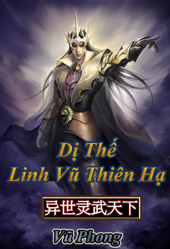
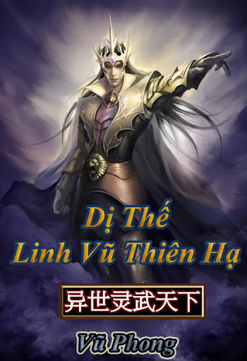

- Tác giả:Vũ Phong
- Thể loại:Tiên Hiệp, Dị Giới, Huyền Huyễn, Xuyên Không
- Nguồn:Vip Văn Đàn
- Trạng thái:Full
Tóm Tắt
Lục Thiếu Du, linh hồn bị xuyên qua đến thế giới khác, nhập vào thân thể của một thiếu gia không có địa vị phải trải qua cuộc sống không khác gì nô bộc.
Thế giới này lấy Vũ vi cường, lấy Linh vi tôn, nghe đồn khi võ đạo đỉnh phong, linh đạo đạt đến cực hạn có thể phá toái hư không.
Lục Thiếu Du mang theo ký ức từ kiếp trước tái sinh, không cam lòng làm một thiếu gia chẳng khác gì củi mục.
Trong thế giới xa lạ,
Say - nằm trên gối mỹ nhân,
Tỉnh - nắm quyền thiên hạ.
Đây mới là cuộc sống đáng mơ ước.
Linh - Vũ song tu
Bá chủ kiêu hùng
Đã đến, ta sẽ lưu lại một huyền thoại......
Danh Sách Chương
- Chương 1
- Chương 2
- Chương 3
- Chương 4
- Chương 5
- ......